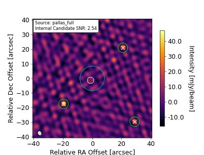

Source Information for 250122_12:19:43 (ObsID 00000)
|
0 |
| polaris_folder |
. |
| target_dir |
/sma/data/science/mir_data/250122_12:19:43 |
| sciTargs |
NGC5044 |
| gainCals |
1337-129, 3c345 |
| fluxCals |
Vesta, Pallas |
| bpCals |
3c279 |
| polCals |
|
| selfCals |
|
| otherCals |
1058+015 |
| deadList |
|
| projectTitle |
Unknown |
| projectID |
UNK |
| piName |
N/A |
| linkObsID |
|



|
field_name |
obs_date_time |
file_name |
beam_maj_axis |
beam_min_axis |
beam_pos_angle |
flux_uncertainty |
flux_density |
coord_ra |
coord_dec |
internal |
| source_1 |
ngc5044 |
6-13-25 12:27:49 |
ngc5044_full.fits |
8.095 arcsec |
5.849 arcsec |
124.0 deg |
0.801 mJy |
42.135 mJy |
198.849 deg |
-16.386 deg |
True |